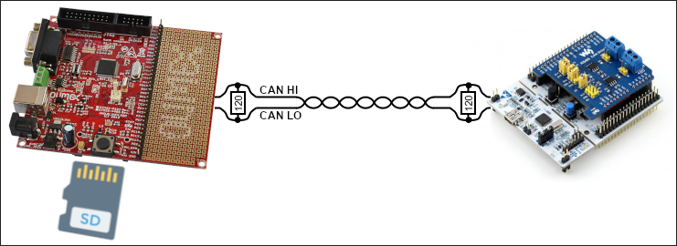

LibMicroBLT demo application
Integrating a new software component into your own firmware is always easier, if you have a fully functional and preconfigured example to refer to. For this purpose a demo application was added to the LibMicroBLT software package. This section explains how to get the demo application up-and-running. Note that there's no need to actually do this yourself. You can alternatively inspect the source of the demo application, to get a feel for how to use LibMicroBLT in your own firmware.
System setup
The demo application consists of firmware for the Olimex STM32-P405 board. This board acts as the main controller, which has LibMicroBLT integrated. It is capable of performing a firmware update on another microcontroller, that runs the OpenBLT bootloader, connected via a CAN bus. It reads the firmware file in the S-record format, from the FAT32 file system on an attached SD card.

As the target node, so the one that gets its firmware updated, you can use any of the OpenBLT demo programs, configured to support firmware updates via CAN. The remainder of this section assumes an ST Nucleo-F091RC board was selected for the target node. Since this board does not feature a CAN transceiver, a Waveshare RS485/CAN shield was attached.
System preparation
Assuming that you use the same boards, prepare the system as follows:
- Connect both boards to a CAN bus with proper 120 Ohm line termination resistors.
- Connect an ST-Link debugger interface to the Olimex STM32-P405 board.
- Power up both boards.
- Flash the
openblt_stm32f091.srecOpenBLT demo bootloader onto the ST Nucleo-F091RC board. - Store the
demoprog_stm32f091.srecOpenBLT demo user program for the ST Nucleo-F091RC board on the SD card. - Insert the SD card into the Olimex STM32-P405 board.
Build, flash and run the demo application
With the system prepared, you just need to build, flash and run the demo application. The demo application was developed with the STM32CubeIDE development environment. Start STM32CubeIDE, create a new workspace and import the demo application. The demo application is located in:
demos/ARMCM4_STM32F4_Olimex_STM32P405_CubeIDE/
Once imported, build the firmware of the demo application by selecting Project → Build Project from the STM32CubeIDE menu. This creates the firmware file:
demos/ARMCM4_STM32F4_Olimex_STM32P405_CubeIDE/Debug/Demo.elf
Start a debugger session to flash this firmware onto the Olimex STM32-P405 board. You can run the demo application using the debugger directly. Alternatively, you can close the debugger session and hit the reset button on the board the run the demo application.
Perform a firmware update
To start the firmware update, press the big black push-button on the Olimex STM32-P405 board. The demo application then looks for a file in the root directory on the SD card, which starts with demoprog and ends with .srec. In our case, this means it finds the file demoprog_stm32f091.srec on the SD-card. Note that this part is done with the help of function AppLocateFirmwareFile().
After detecting the demoprog_stm32f091.srec on the SD card, the demo application starts the firmware update procedure by calling function UpdateFirmware(). This function uses the LibMicroBLT API to:
- Initialize the Firmware and Session modules.
- Open and parse the
demoprog_stm32f091.srecfirmware file on the SD card. - Connect to the bootloader on the Nucleo-F091RC board via the CAN bus.
- Erase the flash memory segments that should be reprogrammed.
- Read the new firmware data from the firmware file and program it to the flash memory.
- Disconnect from the bootloader on the Nucleo-F091RC, which also automatically starts the newly programmed firmware.
- Close the firmware file.
- Terminate the Firmware and Session modules.
A closer look
The logic for the actual firmware update procedure is implemented in function UpdateFirmware() in source file:
demos/ARMCM4_STM32F4_Olimex_STM32P405_CubeIDE/App/update.c
It was developed such that you can reuse this source file and function UpdateFirmware() in your own firmware.
The task that drives the demo application is called AppTask() and is located in source file:
demos/ARMCM4_STM32F4_Olimex_STM32P405_CubeIDE/App/app.c
For detecting the firmware file on the SD card, you can take function AppLocateFirmwareFile() as a starting point. You just need to modify it such that it looks for the filename or filename pattern that you decided on for your firmware files.
The demo application builds on the FreeRTOS real-time operating system. However, this is not mandatory for LibMicroBLT. You can use whatever operating system you prefer, even if it's a basic super loop that drives your firmware. Note that the demo application showcases how to leverage MicroTBX's memory pools for FreeRTOS' heap management. Feel free to reuse it in your own firmware:
demos/third_party/microtbx/source/extra/freertos/tbxfreertos.c